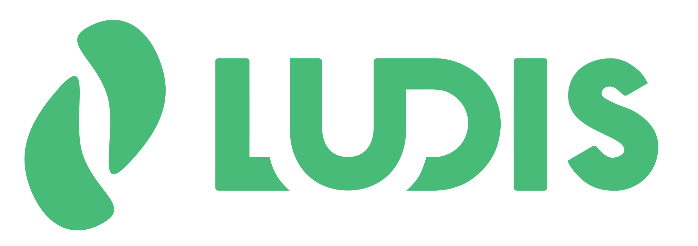
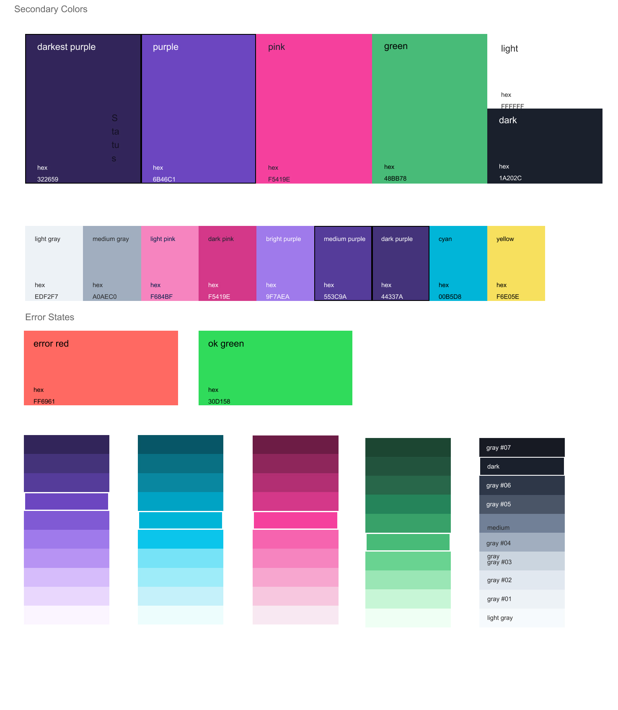
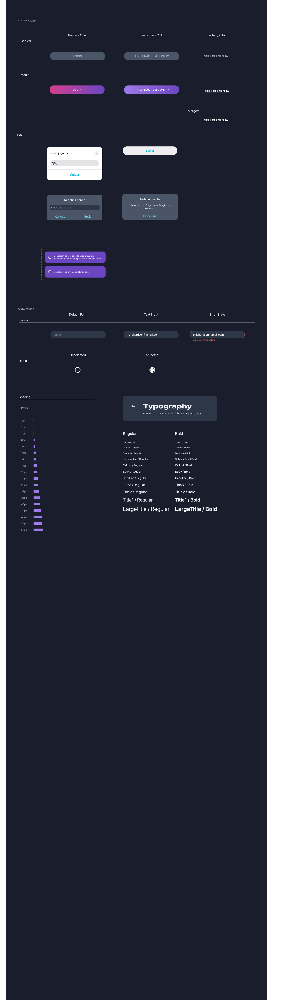
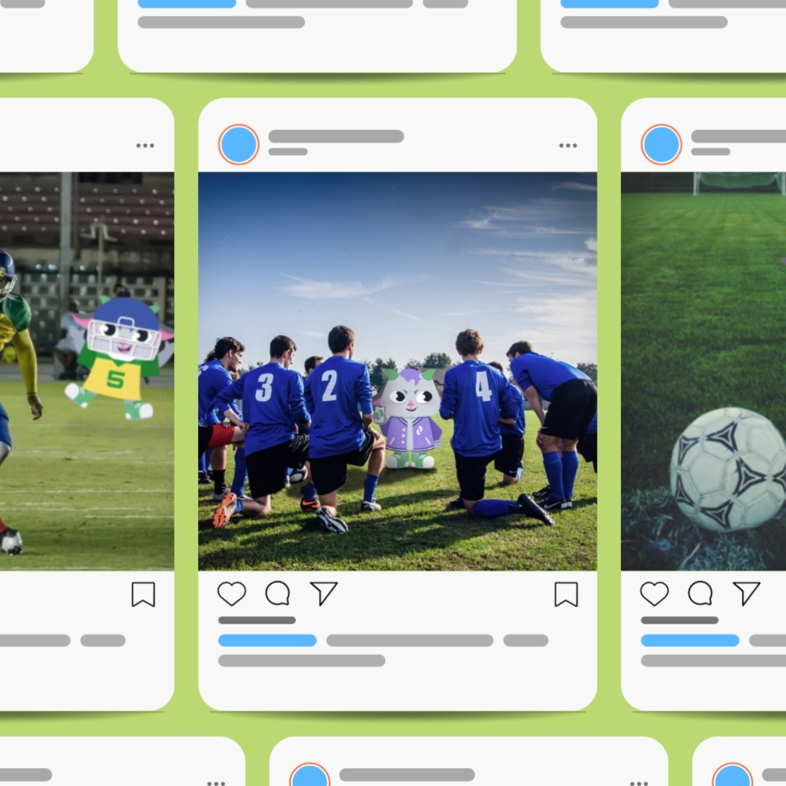

iOS product · Sports management · year

rocket_launchShipped to the App Store
A sports management app taking professional-grade tools — playbooks, calendars, training analytics — to teams of any size. We took it from research to a live iOS product: 8 teams created and 20 active users in the first week of launch.
in week one
at launch
I planned and ran
on the App Store
 phone_iphone
phone_iphoneimagesProjects/ludis-case/appstore-listing.pngScreenshot of the real App Store page — proof of life
southHow we got there
The problem
Pro tools,
amateur budgets
Amateur and school teams run on the same needs as professional ones — playbooks, schedules, training analysis — but the tools for that live in expensive, fragmented professional software. LUDIS brings those artifacts into one accessible app.
Investigate
We asked
before we drew
Using Challenge Based Learning — the same framework I later adapted for my thesis research — we ran semi-structured interviews with N athletes and team organizers, benchmarked N sports and communication apps, and mapped pains through empathy maps and a Value Proposition Canvas.
 psychology
psychologyimagesProjects/ludis-case/research-empathy-map.pngA filled empathy map or the VPC — real material beats a list of method names
What the research told us
the finding — where their team management lived before (WhatsApp? paper?), which professional tool they envied most, what benchmarking showed existing apps get wrong
The question to answer before writing this: from the interviews, what was the one piece of information without which LUDIS would be a different app? If it exists, this screen is the heart of the case. If it doesn't, this screen shrinks and the weight moves to the decisions and the launch.
Design decisions
Three calls that
shaped the product
01
The mascot earns its keep
Sports apps skew cold and utilitarian. From research and market observation we chose to build a mascot that accompanies interactions — borrowing engagement patterns from social products rather than enterprise tools, because our users live in social apps, not dashboards.
Goatie shows up at moments of friction — empty states and first runs — not at random. Delight has a job.
 emoji_nature
emoji_natureimagesProjects/ludis-case/mascot-in-context.pngGoatie inside a real screen — empty state or first run
02
Accessibility as a spec, not a pass
Colour palette and components were checked for colourblind users from the design system up, rather than audited at the end.
one concrete example — which colour or contrast choice changed because of this check

contrastimagesProjects/ludis-case/design-system-colors.jpgPalette sheet
03
HIG as a constraint we accepted
Building strictly inside Apple's Human Interface Guidelines cost us the real trade-off — something the team wanted to do that the platform pattern wouldn't allow and bought us consistency and App Store readiness.

devicesimagesProjects/ludis-case/design-system-components.jpgComponent sheet
Test & iterate
What changed
because of testing
Usability tests on mid-to-high fidelity prototypes, then a TestFlight beta before launch. Three things moved:
scienceUsability test
Observed
the behaviour testers showed
south
Changed
the screen or flow that was adjusted
scienceUsability test
Observed
the behaviour testers showed
south
Changed
the screen or flow that was adjusted
flight_takeoffTestFlight beta
Observed
what the beta caught that the prototype didn't
south
Changed
the fix that shipped
 compare
compareimagesProjects/ludis-case/testing-before-after.pngBefore / after of one screen that changed — the single most convincing image in any case
Go-to-market
Shipping isn't the end of design
Acquisition is a design problem too. I planned the launch strategy and ran three paid campaigns on Meta Ads, producing the promotional content myself.
Real people, organizing real teams, in a product we took from interview scripts to the App Store. one post-launch learning — what the first users did that you didn't predict, or which campaign metric surprised you
The campaign
Pieces that ran

imageimagesProjects/ludis-social/8.jpgSocial feed pieces
 campaign
campaignimagesProjects/ludis-case/campaign-01.pngPaid ad creative, campaign 1
 campaign
campaignimagesProjects/ludis-case/campaign-02.pngPaid ad creative, campaign 2
 monitoring
monitoringimagesProjects/ludis-case/meta-ads-dashboard.pngMeta Ads dashboard — real numbers in a real interface
Looking back
What I'd argue
with today
- warning Our research described the user well but never got contradicted — which now reads to me as a warning sign, not a success. In my next project, Mosaico, I designed the study so it could prove me wrong.
- timeline 20 users in week one was a start, not a validation. what happened after — retention? is the app still live? one honest sentence about its current state
- lightbulb third retrospective — something you'd do differently, in your own words